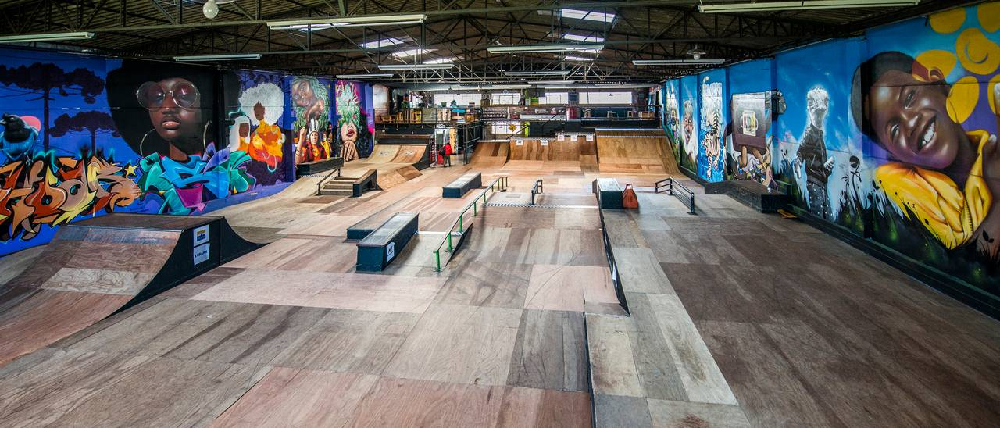

Bem-vindo ao nosso site sobre pistas de skate em Curitiba!
Aqui você encontrará informações sobre as principais pistas de skate na cidade.
Pistas de Skate
Curitiba Skate Park
Pista de skate Alto Tarumã

Pista Praça São Marcos

Sobre
Este site foi criado para fornecer informações sobre as pistas de skate em Curitiba e ajudar skatistas a encontrar locais para praticar o esporte na cidade.
Contato
Se você tiver alguma dúvida ou sugestão, entre em contato conosco:
Email: taricsantos80@gmail.com
Cel.: (41) 98472-1548